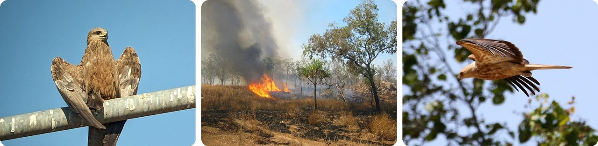
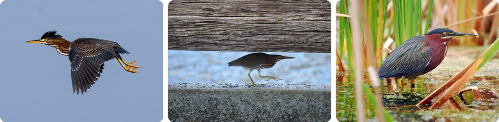
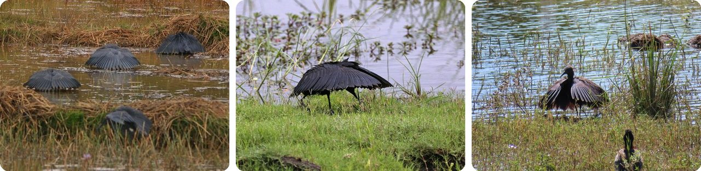
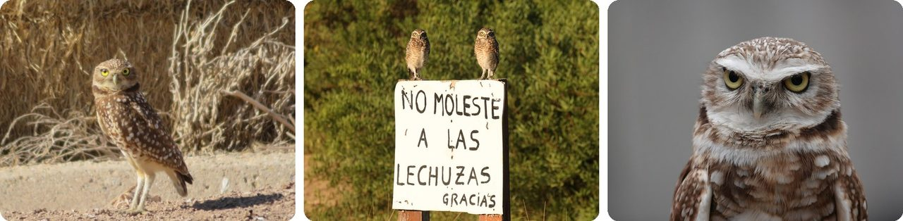
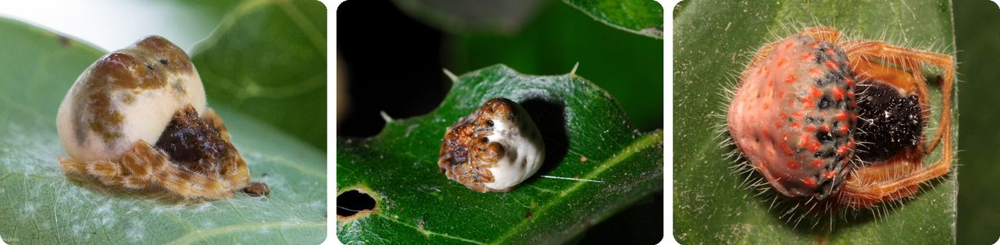
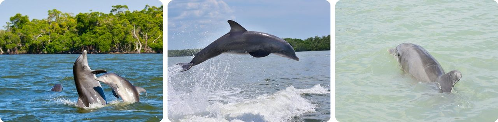
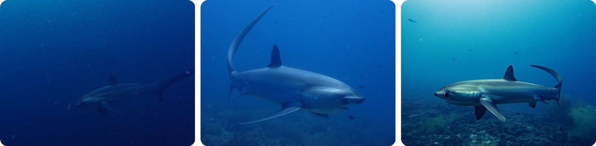
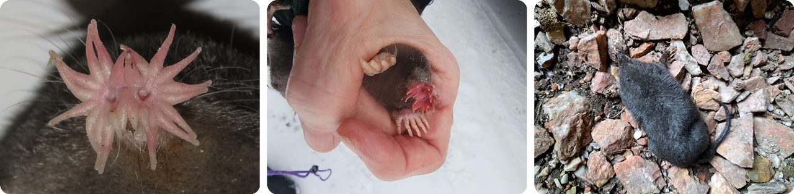
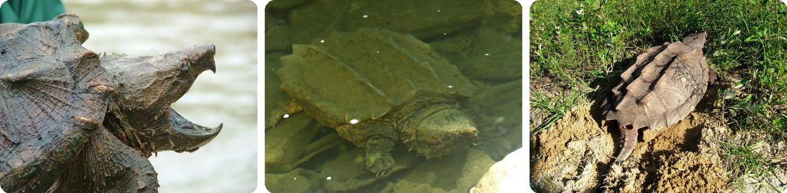
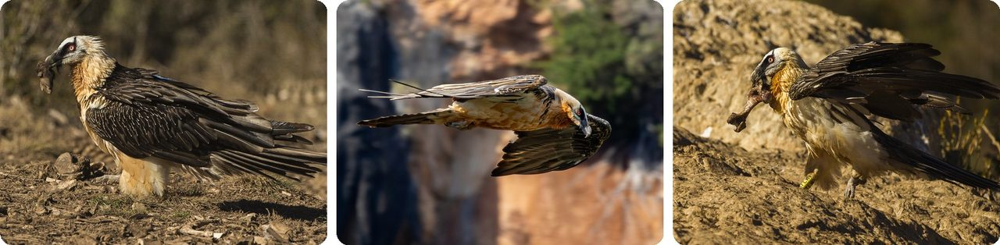

🌍 톱 10 잘 알려지지 않은 동물의 사냥 비법
2026년 11월 5일
1. 🇦🇺 호주의 '불매'는 불붙은 나뭇가지를 옮겨서 불을 퍼뜨려요

호주 북부에는 들불 근처를 맴도는 맹금류 세 종(솔개, 휘파람솔개, 갈색매)이 있어요. 원주민들은 오래전부터 이 새들을 '불매(firehawk)'라고 불렀는데, 다 이유가 있어요.이 새들은 불 속에서 아직 연기가 나는 나뭇가지를 집어 들고 날아가서, 아직 타지 않은 풀숲에 떨어뜨려요. 때로는 1킬로미터나 떨어진 곳까지 가져가는데, 축구장 열 개를 이어 놓은 길이쯤이에요. 풀에 불이 붙으면 새로운 불이 시작돼요. 작은 동물들이 불을 피해 도망치면, 새들이 휙 내려와 낚아채요.
2017년의 한 연구가 원주민과 다른 목격자들의 이야기를 모았어요. 아직 아무도 카메라로 찍지는 못했고, 매번 성공하는 것도 아니에요. 가지가 너무 가까이 떨어지거나 그냥 꺼져 버릴 때도 있거든요.
한마디로, 간식을 몰아내려고 덤불에 불을 붙이는 거예요.
2. 🎣 그린헤론은 미끼로 낚시를 해요

그린헤론은 북아메리카와 중앙아메리카에 사는 작은 왜가리예요. 몸길이는 44센티미터쯤으로, 학교 자 한 개 반 정도예요. 대부분은 물가에 꼼짝 않고 서서 물고기가 가까이 오기를 기다려요.그런데 어떤 그린헤론은 더 똑똑한 방법을 써요. 빵 조각이나 벌레, 심지어 깃털을 물어다가 물 위에 떨어뜨려요. 궁금해진 물고기가 미끼를 쪼려고 올라오면, 왜가리의 부리가 쏜살같이 내려가 물고기를 잡아요.
그래서 그린헤론은 도구를 쓰는 몇 안 되는 새 중 하나예요.
낚싯대만 없을 뿐, 낚시하는 새예요.
3. 🌍 흑로는 날개를 우산처럼 펼쳐서 물고기를 잡아요

흑로는 아프리카와 마다가스카르에 살고, 키는 어른 무릎쯤 와요. 사냥할 때 깜짝 놀랄 행동을 해요. 두 날개를 앞으로 휙 젖혀 머리 위를 덮고 완벽한 검은 우산을 만들어요.이 우산이 물 위에 그늘을 만들어요. 작은 물고기들은 그늘에 숨는 걸 좋아해서 그 안으로 헤엄쳐 들어오는데, 바로 흑로의 부리 밑이에요.
흑로는 함께 사냥하는 일이 많아서, 많게는 50마리까지 무리를 지어요. 지금까지 센 가장 큰 무리는 200마리였는데, 펼친 우산이 들판 가득 늘어선 것처럼 보였을 거예요.
그늘진 숨을 곳을 직접 만들고, 그 안에서 손님을 기다리는 새라고 생각하면 돼요.
4. 🦉 굴올빼미는 똥을 깔아 두고 딱정벌레를 '키워요'

굴올빼미는 북아메리카와 남아메리카의 땅굴에 사는 작은 올빼미예요. 다른 동물이 파 놓은 굴로 이사 들어갈 때도 많아요. 둥지를 트는 철이 되면 동물 똥을, 주로 소똥을 모아서 굴 입구 둘레에 깔아 놓아요.지저분해서 그러는 게 아니에요. 쇠똥구리는 똥을 아주 좋아해서 찾아와요. 그리고 굴올빼미는 쇠똥구리를 먹는 걸 아주 좋아해요.
그래서 먹이를 찾아 이리저리 날아다니는 대신, 현관 앞에 미끼를 차려 두면 먹이가 알아서 걸어 들어와요.
다시 말해, 집 앞에 간식 가게를 차린 셈이에요.
5. 🕸️ 볼라스거미는 끈끈한 공과 가짜 냄새로 나방을 낚아요

대부분의 왕거미류는 크고 둥근 거미줄을 쳐요. 그런데 볼라스거미는 거미줄을 아예 안 쳐요. 대신 끝에 끈끈한 방울이 달린 거미줄 한 가닥을 늘어뜨려요. 끈끈한 낚싯바늘이 달린 낚싯줄 같아요.비법은 이거예요. 이 거미는 암컷 나방이 수컷을 부를 때 쓰는 냄새를 흉내 낸 냄새를 풍겨요. 수컷 나방은 짝을 만나는 줄 알고 냄새를 따라와요. 한 마리가 가까이 날아오면, 거미가 줄을 휘둘러 낚아채요.
암컷 볼라스거미는 몸길이가 10~20밀리미터밖에 안 돼서, 손톱만 해요. 낮에는 새똥처럼 보이는 종도 있어서, 배고픈 새들도 그냥 지나쳐요.
지렁이 대신 향수로 낚시하는 것과 같아요.
6. 🇺🇸 플로리다의 돌고래는 진흙 고리로 물고기를 가둬요

플로리다 앞바다의 얕은 물에서, 큰돌고래들은 '진흙 고리 사냥'이라는 팀 기술을 써요. 돌고래 한 마리가 물고기 떼 둘레를 빠르게 빙빙 돌면서 꼬리로 모래 바닥을 쓸어요.꼬리가 5~11미터 길이의 진흙 줄기를 일으키는데, 교실 길이쯤 돼요. 이 줄기가 그물처럼 둥글게 휘어 고리가 돼요. 안에 갇힌 물고기들은 정신이 없어져서 물 밖으로 뛰어오르기 시작해요.
그러면 돌고래들이 진흙 구름을 뚫고 돌진해서 물고기를 잡아요. 전체가 17초쯤 걸리고, 사람들은 1999년에 처음 이 장면을 봤어요.
한마디로, 돌고래가 진흙으로 그물을 만드는 거예요.
7. 🇵🇭 환도상어는 채찍 같은 꼬리로 물고기를 기절시켜요

환도상어는 꼬리가 몸의 나머지 부분만큼 길 수 있어요. 과학자들은 이 꼬리를 무기로 쓴다고 생각했어요. 2010년, 필리핀 페스카도르섬에서 잠수부들이 마침내 그 장면을 찍었고, 연구는 2013년에 발표됐어요.상어는 정어리 떼에 다가가서 옆지느러미로 브레이크를 걸어요. 그런 다음 긴 꼬리를 머리 위로 휙 넘겨서 채찍처럼 내리쳐요.
이 한 방에 정어리가 여러 마리 한꺼번에 기절할 때가 많아요. 그러면 상어가 어지러워진 물고기를 먹어요.
꼬리를 거대한 파리채처럼 쓰는 바다 동물이라고 생각하면 돼요.
8. 🫧 별코두더지는 거품을 불어서 물속에서 냄새를 맡아요

별코두더지는 북아메리카의 축축한 땅에 사는 햄스터만 한 두더지예요. 코끝에 꼼지락거리는 분홍색 손가락 22개가 달려 있고, 거기에 2만 5천 개가 넘는 아주 작은 촉각 감지기가 덮여 있어요. 그래서 여러분 손보다 여섯 배쯤 더 예민해요.기록된 포유류 중에서 먹는 속도도 가장 빨라요. 벌레를 건드리고, 먹을 거라고 판단하고, 꿀꺽 삼키기까지 최소 120밀리초, 그러니까 10분의 1초 정도면 돼요.
그리고 물속에서는 냄새를 못 맡을 것 같지만, 냄새 자국 위에 작은 공기 방울을 내뿜었다가 다시 들이마셔서 냄새를 코로 가져와요.
다시 말해, 이 코는 손이고 눈이고 스노클이에요.
9. 🇺🇸 악어거북은 혀에 달린 가짜 벌레로 낚시를 해요

악어거북은 미국 남동부의 강과 호수에 살아요. 혀끝에는 벌레처럼 생긴 작은 분홍색 살점이 붙어 있어요.사냥할 때 거북은 흐린 물 바닥에 꼼짝 않고 앉아 입을 크게 벌리고 있어요. 입속은 회색이라 주변과 구별이 안 돼서, 물고기 눈에는 꿈틀거리는 분홍색 '벌레'만 보여요.
물고기가 벌레를 물려고 들어오면, 거북의 턱이 엄청난 속도와 힘으로 탁 닫혀요. 어린 거북들은 이렇게 피라미 같은 작은 물고기를 잡아요.
함정까지 딸려 오는 낚시 미끼예요.
10. 🏔️ 수염수리는 뼈를 바위에 떨어뜨려 깨뜨려요

수염수리는 남유럽, 동아프리카, 아시아의 높은 산에 살고, 거의 뼈만 먹어요. 뼈가 먹이의 70~90퍼센트를 차지하는데, 등뼈가 있는 동물 중에서 이렇게 뼈를 많이 먹는 동물은 없어요.작은 뼈는 그냥 삼켜요. 너무 커서 못 삼키는 뼈는 50~150미터 높이까지, 그러니까 16층에서 50층 건물 높이쯤까지 들고 올라가서 바위 위로 떨어뜨려요. 그리고 빙글빙글 돌며 내려와 확인해요. 뼈가 충분히 안 깨졌으면 다시 올라가서 또 해 봐요.
제대로 하려면 연습이 필요해요. 어린 새는 이걸 익히는 데 최대 7년이 걸려요. 위산이 아주 강해서 큰 뼈도 하루쯤이면 녹아요.
호두까기인데, 호두는 뼈고 까는 도구는 산이에요.
재미있는 사실
1900년대 말, 스페인 전체에 남은 수염수리는 겨우 30마리쯤이었어요. 1995년, 스페인의 한 단체가 주로 피레네산맥에서 수염수리를 지키는 일을 시작했고, 나중에는 수염수리가 사라졌던 산에도 다시 데려왔어요. 25년 동안 노력한 끝에, 이 단체는 스페인에 수염수리가 다시 1,000마리 넘게 살게 됐다고 발표했어요. 사람들이 도와준 덕분에 사라질 위기에서 돌아온 많은 동물 중 하나예요.
사진 출처 (Wikimedia Commons)
- #1: Milvus migrans · Katherine South NT 0850, Australia by (c) Laura Sewell, some rights reserved (CC BY), CC BY
- #1: Bushfire Australia.jpg by Thomas Schoch, CC BY-SA 2.5
- #1: Haliastur sphenurus · Kakadu NT 0822, Australia by (c) Graham Winterflood, some rights reserved (CC BY-SA), CC BY-SA
- #2: Butorides virescens · Yolo Bypass Wildlife Area, Yolo, California, United States by (c) Jonathan Eisen, some rights reserved (CC BY), CC BY
- #2: Butorides virescens · Deerfield Beach, FL, USA by (c) Josiah Londerée, some rights reserved (CC BY), CC BY
- #2: Butorides virescens · Lake County, FL, USA by (c) Tom Kennedy, some rights reserved (CC BY), CC BY
- #3: Balck Heron canopy crop.jpg by Egretta_ardesiaca_i.jpg: Neil Strickland derivative work: Sabine's Sunbird (talk), CC BY 2.0
- #3: Black Heron (Egretta ardesiaca) 1.jpg by Lip Kee, CC BY-SA 2.0
- #3: Egretta ardesiaca · Chobe River, Chobe, BW by (c) Nelson Balcar, some rights reserved (CC BY), CC BY
- #4: Athene cunicularia · Imperial County, US-CA, US by (c) kclarksdnhmorg, some rights reserved (CC BY), CC BY
- #4: Athene cunicularia · Costa del Este, Provincia de Buenos Aires, Argentina by (c) Holger Braun, some rights reserved (CC BY), CC BY
- #4: Athene cunicularia · Okanagan-Similkameen, CA-BC, CA by no rights reserved, CC0
- #5: Mastophora hutchinsoni · Waubesa Wetlands State Natural Area, Dane County, WI, USA by (c) Ken-ichi Ueda, some rights reserved (CC BY), CC BY
- #5: Mastophora cornigera · Central San Jose, San Jose, CA, USA by (c) Eddie Dunbar, some rights reserved (CC BY-SA), CC BY-SA
- #5: Mastophora carpogastra · UFMG by (c) Renato Brito, some rights reserved (CC BY), CC BY
- #6: Tursiops truncatus · Monroe County, FL, USA by (c) Punkus, some rights reserved (CC BY), CC BY
- #6: Tursiops truncatus · Lee County, FL, USA by (c) Dean Hester, some rights reserved (CC BY), CC BY
- #6: Tursiops truncatus · Marco Island, FL, USA by (c) Robbie, some rights reserved (CC BY), CC BY
- #7: Alopias pelagicus · Cebu, PH by (c) Slunky, some rights reserved (CC BY), CC BY
- #7: Alopias pelagicus · by (c) Ben Jobson, some rights reserved (CC BY), CC BY
- #7: Alopias pelagicus · by (c) Pierre Pericard, some rights reserved (CC BY), CC BY
- #8: Condylura cristata · Fifth Line, Rockwood, ON, CA by (c) Dan MacNeal, some rights reserved (CC BY), CC BY
- #8: Condylura cristata · Stony River Township, MN, USA by (c) Norma Malinowski, some rights reserved (CC BY), CC BY
- #8: Condylura cristata · Johnson, ON, Canada by no rights reserved, CC0
- #9: Alligator snapping turtle with mouth open.webp by Garry Tucker, USFWS, Public domain
- #9: Macrochelys temminckii · Ohio, US by no rights reserved, CC0
- #9: Macrochelys temminckii · Florida, US by (c) Jason Hill, some rights reserved (CC BY), CC BY
- #10: Bearded Vulture with bone - Catalan Pyrenees - Spain_MG_4619 (flickr) by fveronesi1, CC BY-SA 2.0
- #10: Gypaetus barbatus barbatus · Huesca, España by (c) Diego González Dopico, some rights reserved (CC BY), CC BY
- #10: Bearded Vulture carrying a big bone - Catalan Pyrenees - Spain _S4E8272 (flickr) by fveronesi1, CC BY-SA 2.0


_1.jpg){kind=link}